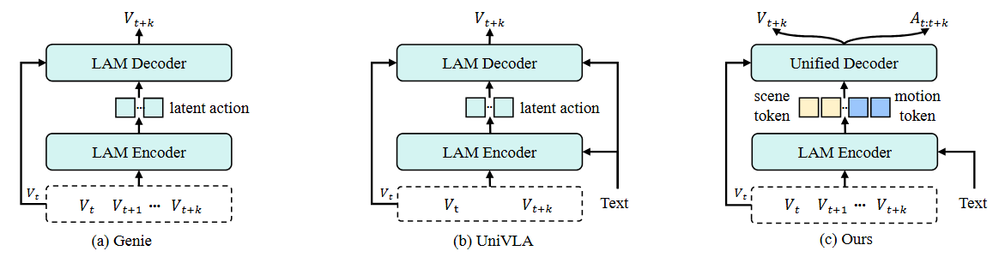
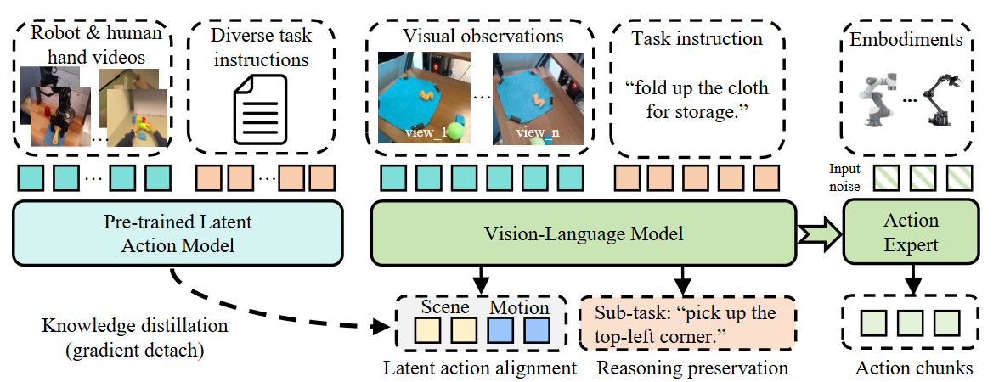
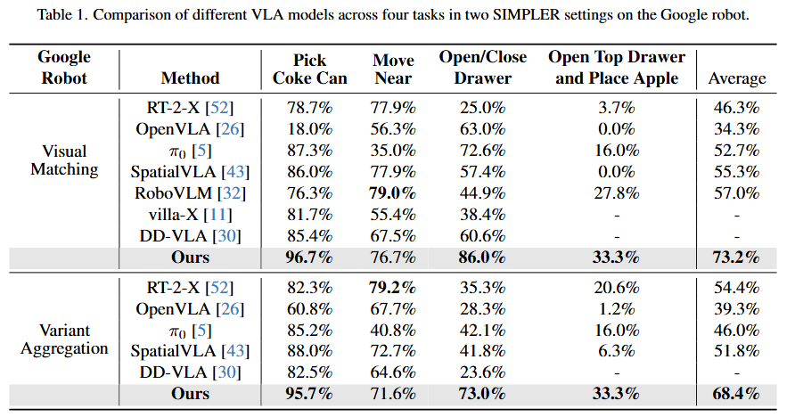
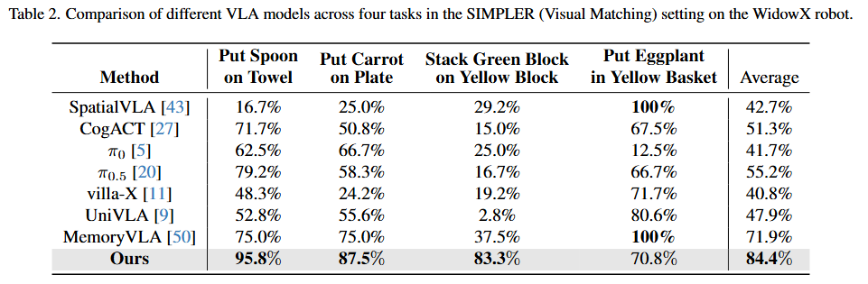
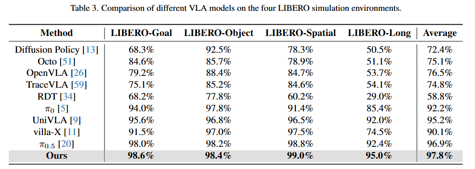
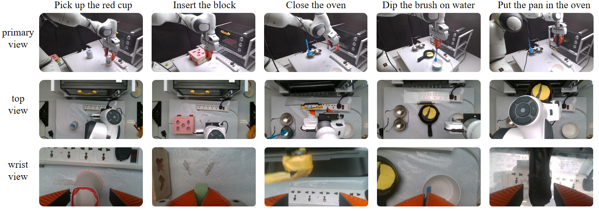
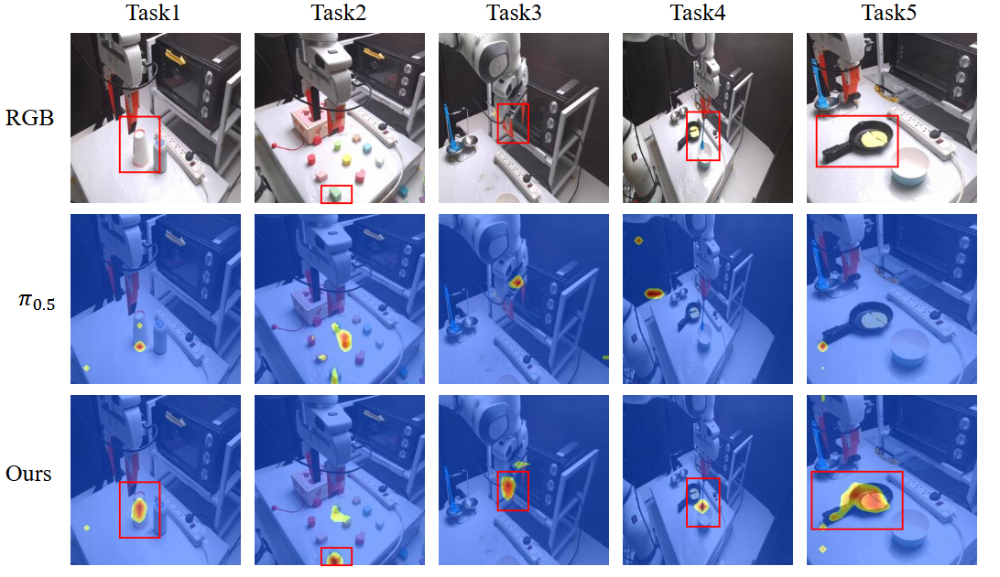

Dip the brush in the water
Put the pan in the oven
Put the green block into the corresponding slot
Put the yellow block into the corresponding slot
Pick up the blue cup
Pick up the red cup
Close the oven
Push the red button with the right gripper
Pull the black wire
Turn the knob to position 1
Learning transferable latent actions from large-scale object manipulation videos can significantly enhance generalization in downstream robotics tasks, as such representations are agnostic to different robot embodiments. Existing approaches primarily rely on visual reconstruction objectives while neglecting physical priors, leading to sub-optimal performance in learning universal representations.
To address these challenges, we propose a Universal Latent Action Learning framework that takes task instructions and multiple frames as inputs, and optimizes both future frame reconstruction and action sequence prediction. Unlike prior works, incorporating action predictions (e.g., gripper or hand trajectories and orientations) allows the model to capture richer physical priors such as real-world distances and orientations, thereby enabling seamless transferability to downstream tasks. We further decompose the latent actions into learnable motion and scene tokens to distinguish the robot’s active movements from environmental changes, thus filtering out irrelevant dynamics.
By distilling the learned latent actions into the latest VLA models, we achieve strong performance across both simulated (SIMPLER and LIBERO) and real-world robot settings. Notably, with only 10 real-world trajectories per task collected on a Franka robot, our approach successfully completes all five challenging tasks, demonstrating strong few-shot transferability in robotic manipulation.


By optimizing the VLMs with latent action alignment loss and reasoning preservation loss, we distill generalizable action representations learned from both robot and human hand demonstration videos, while simultaneously maintaining sub-task planning capabilities. This is followed by an action expert module for continuous action prediction.



Put the white mug on the left plate and put the yellow and white mug on the right plate
Put the black bowl in the bottom drawer of the cabinet and close it
Put both the alphabet soup and the cream cheese box in the basket
Open the top drawer and put the bowl inside
Put the yellow and white mug in the microwave and close it
Turn on the stove and put the moka pot on it
Move 7up can near apple
Open bottom drawer
Open top drawer and put the apple.
Stack green block on yellow block
Put the eggplant in yellow basket
Put the carrot on the plate
We distill latent action knowledge from the latent action model into the vision-language model (VLM) of the vision-language-action (VLA) model (e.g., \( \pi_{0.5} \)) and compare it with the original VLM of the VLA on real-world tasks.

Tasks include pick-up, insertion, and other manipulation skills that demand both precise translational control and rotational motions.

We visualize the VLM’s attention maps between the final text token and the visual features for both \( \pi_{0.5} \) and our model across various real-robot tasks, and observe that latent-action distillation significantly strengthens the model’s spatial understanding.
@article{li2025distilling,
title={LatBot: Distilling Universal Latent Actions for Vision-Language-Action Models},
author={Li, Zuolei and Gao, Xingyu and Wang, Xiaofan and Fu, Jianlong},
journal={arXiv preprint arXiv:2511.23034},
year={2025}
}